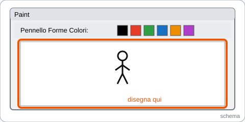
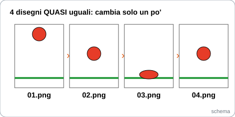
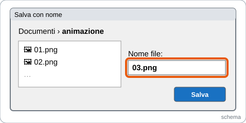
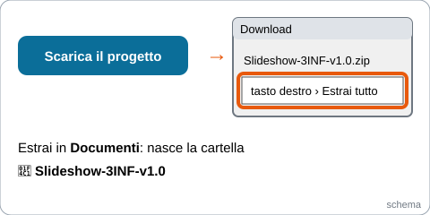
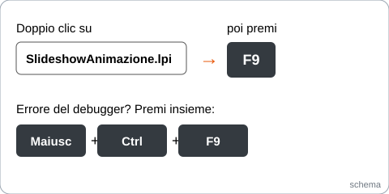
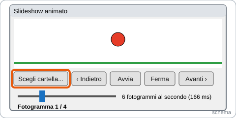
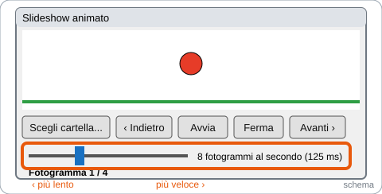
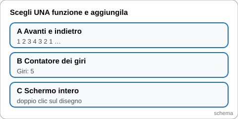
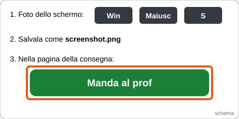
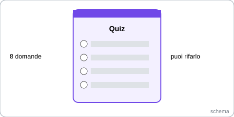

ANTEPRIMA per il Professore: la lezione non è ancora pubblicata.
Slideshow animato: i tuoi disegni si muovono
3INF · Laboratorio · Creazioni di applicazioni con Lazarus · 2 ore
A che punto sei
Hai fatto 0 passi.
Vai qui adessoChe cosa facciamo
Un cartone animato è fatto di tanti disegni quasi uguali, mostrati uno dopo l'altro molto in fretta.
কার্টুন হলো অনেকগুলো প্রায় একই রকম ছবি, খুব দ্রুত পরপর দেখানো।
Oggi disegni i tuoi e il programma Lazarus li fa muovere. Con una barra scegli la velocità.
আজ তুমি নিজের ছবি আঁকবে আর Lazarus প্রোগ্রাম সেগুলো নড়াবে। একটা বার দিয়ে গতি বেছে নেবে।
Ora 1 (11-12) · Disegna e fallo girare
1Disegna il primo disegno in Paint

Apri Paint: premi il tasto Windows, scrivi Paint, premi Invio.
Paint খোলো: Windows বোতাম চাপো, Paint লেখো, Enter চাপো।
Disegna una cosa semplice e tua: un omino, una palla, una faccia, una macchina.
একটা সহজ জিনিস আঁকো: একটা মানুষ, একটা বল, একটা মুখ, একটা গাড়ি।
2Fai da 4 a 8 disegni quasi uguali

Ogni disegno cambia solo un po' dal precedente: così, uno dopo l'altro, sembra che si muova.
প্রতিটা ছবি আগেরটা থেকে একটু বদলাও: পরপর দেখালে মনে হবে নড়ছে।
Trucco: disegna il primo, salvalo, poi sposta solo un pezzo e salva con il numero dopo.
কৌশল: প্রথমটা আঁকো, সেভ করো, তারপর একটু সরিয়ে পরের নম্বরে সেভ করো।
3Salva i disegni con il numero

In Documenti crea la cartella animazione.
Documents-এ animazione নামে একটা ফোল্ডার বানাও।
Salva con il numero davanti: 01.png, 02.png, 03.png… (File → Salva con nome).
নম্বর দিয়ে সেভ করো: 01.png, 02.png, 03.png…
4Scarica il progetto Lazarus

Scarica il progetto (Slideshow-3INF-v1.0.zip)Tasto destro sullo zip, poi Estrai tutto e scegli Documenti.
zip ফাইলে ডান ক্লিক করো, তারপর «Estrai tutto», Documents বেছে নাও।
5Aprilo e fallo girare

Doppio clic su SlideshowAnimazione.lpi: si apre Lazarus.
SlideshowAnimazione.lpi-তে ডাবল ক্লিক করো: Lazarus খুলবে।
Premi F9. Se c'è un errore del debugger, premi Maiusc + Ctrl + F9.
F9 চাপো। debugger-এর ভুল এলে Shift + Ctrl + F9 চাপো।
Premi Avvia: la palla d'esempio rimbalza.
«Avvia» চাপো: উদাহরণের বলটা লাফাবে।
6Carica i TUOI disegni

Premi Scegli cartella… e scegli la tua cartella animazione.
«Scegli cartella...» চাপো আর তোমার animazione ফোল্ডার বেছে নাও।
Premi Avvia: ora si muovono i tuoi disegni!
«Avvia» চাপো: এখন তোমার নিজের ছবি নড়বে!
Ora 2 · in arrivo
Si apre tra poco: te lo dice il Professore. Per ora finisci l'ora 1.
এটা একটু পরে খুলবে, স্যার বলবেন। এখন ১ম ঘণ্টা শেষ করো।
Ora 2 (12-13) · Velocità, la tua funzione, consegna e quiz
7Cambia la velocità con la barra

Sposta la barra: a destra va più veloce, a sinistra più lento.
বারটা সরাও: ডানে দ্রুত, বামে ধীরে।
8 fotogrammi al secondo vuol dire che il Timer aspetta 1000 : 8 = 125 millisecondi tra un disegno e l'altro.
প্রতি সেকেন্ডে ৮টা ছবি মানে Timer প্রতিটা ছবির মাঝে ১২৫ মিলিসেকেন্ড অপেক্ষা করে।
Trova la velocità più bella per i tuoi disegni.
তোমার ছবির জন্য সবচেয়ে সুন্দর গতি খুঁজে বের করো।
8Aggiungi UNA funzione a scelta

Scegli A, B oppure C. Scrivi il codice nel posto giusto e premi F9.
A, B বা C বেছে নাও। কোডটা ঠিক জায়গায় লেখো আর F9 চাপো।
A · Avanti e indietro (1 2 3 4 3 2 1…)
In private aggiungi Verso: Integer;, in FormCreate scrivi Verso := 1;. Poi cambia il Timer così:
procedure TFormSlideshow.TimerAnimazioneTimer(Sender: TObject);
begin
if Quanti < 2 then Exit;
if (N + Verso > Quanti - 1) or (N + Verso < 0) then
Verso := -Verso; // in fondo: si torna indietro
N := N + Verso;
Mostra;
end;B · Contatore dei giri
In private aggiungi Giri: Integer;. Poi:
if N = 0 then Inc(Giri); // in BottoneAvantiClick, dopo N := ... EtichettaFotogramma.Caption := 'Fotogramma ' + IntToStr(N + 1) + ' / ' + IntToStr(Quanti) + ' Giri: ' + IntToStr(Giri); // in Mostra
C · Schermo intero (doppio clic sul disegno)
Clicca il disegno nel form, nella finestra delle proprietà apri Eventi e fai doppio clic su OnDblClick. Scrivi:
procedure TFormSlideshow.ImmagineFotogrammaDblClick(Sender: TObject);
begin
if WindowState = wsFullScreen then
WindowState := wsNormal
else
WindowState := wsFullScreen;
end;Per il contenuto chiedi all'assistente, non al prof.
বিষয় নিয়ে প্রশ্ন থাকলে assistant-কে জিজ্ঞেস করো।
9Manda al prof

Fai partire l'animazione e premi Win + Maiusc + S per la foto dello schermo. Salvala.
অ্যানিমেশন চালু করো আর স্ক্রিনের ছবি তুলতে Win + Shift + S চাপো। সেভ করো।
Manda al profNella pagina che si apre scegli lo screenshot e premi il bottone verde.
যে পাতা খুলবে সেখানে screenshot বেছে সবুজ বোতাম চাপো।
10Quiz su Moduli (8 domande)

Il quiz si apre con l'ora 28 domande. Puoi rifarlo: vale il migliore.
৮টা প্রশ্ন। আবার দিতে পারো: সবচেয়ে ভালোটা গোনা হবে।
Piano B
Se il bottone «Manda al prof» non va: consegna lo screenshot su Classroom, nel compito di oggi.
«Manda al prof» কাজ না করলে Classroom-এ আজকের কাজে screenshot দাও।